Introduction to Toyota
[Pengenalan Toyota]

Apa itu TPS?
▶ T → Toyota
▶ P → Production
▶ S → System
Mengapa Toyota sangat maju & terkenal?
▶ Teknologi terkini
▶ Produk berkualiti
▶ Rekabentuk terkini
▶ Servis yang menepati
▶ Ciri keselamatan terkini
▶ Pengurusan kerja terkawal
Apakah produk-produk Toyota?
1
T-HR3
2
Hiace Van
3
FT-1 Vision Gran Turismo
4
Forklift
5
Toyota Corolla
6
Toyota Dyna
7
Land Cruiser
8
Toyota Supra
9
Toyota Traigo

10
Toyota i-Road
11
Toyota 7 Turbo
12
Toyota Sora
13
Toyota Sewing Machine
Produk Pertama Toyota?
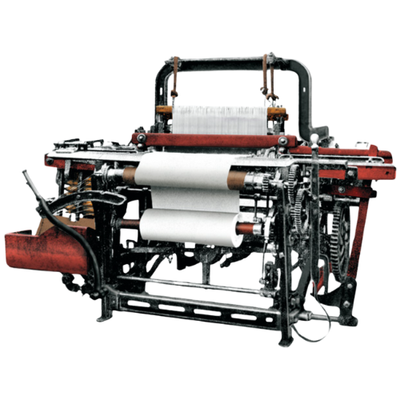
▶ Mesin Tenun Automatik.
▶ Diperkenalkan pada tahun 1920an.
▶ Kenapa mesin tenun? Bincangkan.
Produk Kereta Pertama Toyota?
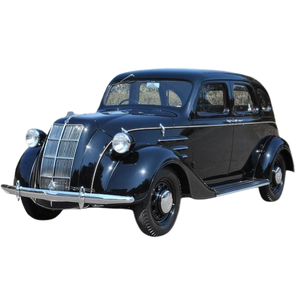▶ Model A1.
▶ Diperkenalkan pada tahun 1936.
▶ Peluang pekerjaan buat warga sekitar.
▶ Ekonomi sekitar meningkat.
Toyota terus berkembang dengan mencapai:
Kepuasan pelanggan
Apa akan berlaku sekiranya kepuasan pelanggan tidak tercapai?
▶ Hilang kepercayaan.
▶ Produk tidak terjual.
▶ Syarikat merudum.
▶ Pekerja hilang kerja.
Dimana Toyota mula diperkenalkan?
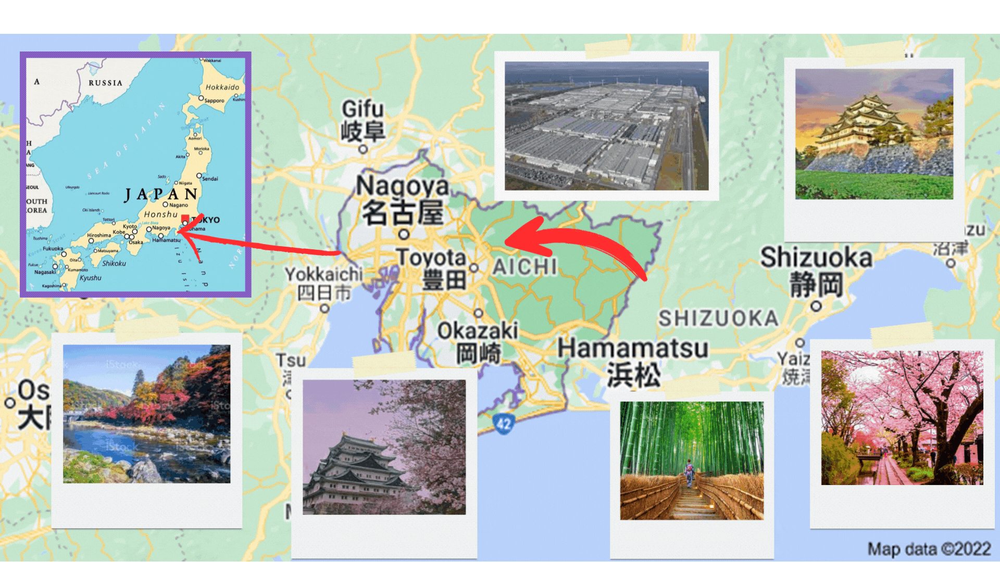▶ Discipline
▶ Communication
▶ Teamwork
Siapakah Pengasas Toyota Production System?
4 tonggak utama didalam Toyota Production System.
① Mr. Sakichi Toyoda
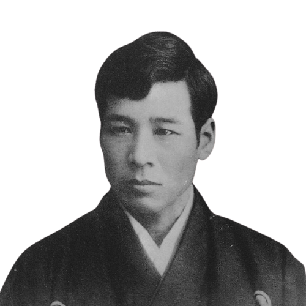
② Mr. Kiichiro Toyoda

③ Mr. Eiji
Toyoda
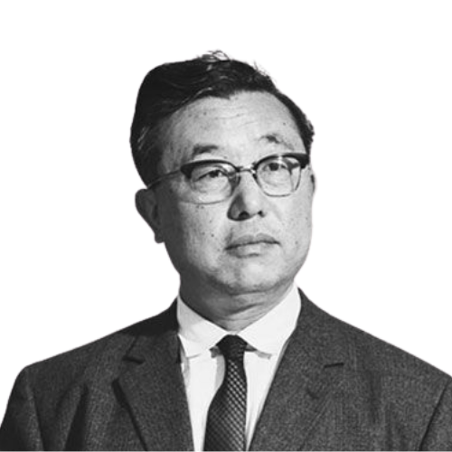
④ Mr. Taiichi Ohno
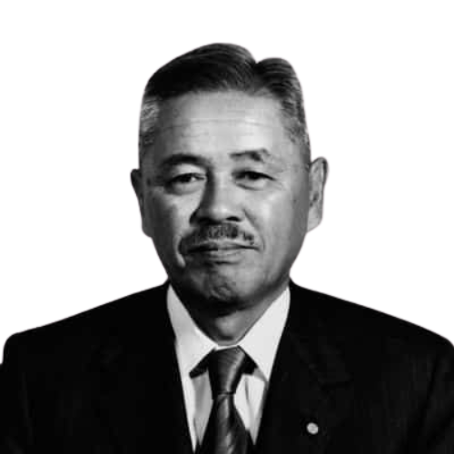
Sejarah Pengasas Sistem Toyota Pertama
Mr. Sakichi Toyoda
Pengasas Mesin Tenun Automatik Toyoda Automatic Loom Works
- Dilahirkan pada 14-Feb-1867
- Meninggal pada 30-Oct-1936
Permulaan Inovasi
Penciptaan mesin Tenun
Emak Mr. Sakichi menggunakan alat tradisional hanya mampu hasilkan 2~3 gulung sehari.
Mesin Pertama
Menggunakan mesin pengeluaran meningkat 4X ganda.
Mesin terus bergerak walaupun abnormal. Perlu meletakkan 1 manpower untuk menjaga mesin.
Penyelesaian Revolusioner
Mr. Sakichi terus berfikir (melakukan Kaizen) bagaimana untuk hapuskan abnormal
(pembaziran)
Dia menambahbaik mesinnya kepada automatik (alat tenun model G):
- Produktiviti meningkat 15~20X ganda
- Tanpa sebarang defect
Pemikiran Kaizen: Penambahbaikan berterusan untuk memudahkan pekerja dan meningkatkan kecekapan.
Mesin Tenun Tradisional
Mesin Tenun Automatik
Sejarah Pengasas Sistem Toyota Kedua
Mr. Kiichiro Toyoda
Pengasas Toyota Motor Company
- Dilahirkan pada 11-Jun-1894
- Meninggal pada 27-Mar-1952
Permulaan Inovasi
[Mr. Kiichiro Toyoda adalah merupakan anak kepada Mr. Sakichi]
- Apa yang dia mahukan?
- Apa yang dia cipta?
- Apa yang negara Jepun mahukan?
◆ Jepun mensasarkan sebagai negara pembuatan "Kereta"
Kereta Pertama Toyota
Mr. Kiichiro telah membuat keputusan berani dengan membangunkan industri Automotive pada masa itu.
Dengan keadaan bahan mentah tidak mencukupi dan sukar untuk didapati maka:
Mr.Kiichiro telah menetapkan kawalan produk dengan menghasilkan barang yang diperlukan pada masa yang diperlukan dan dalam kuantiti diperlukan sahaja. Untuk mengelakkan pembaziran
Sejarah Pengasas Sistem Toyota Ketiga
Mr. Eiji Toyoda
Pengasas Toyota Motor Corporation
- Dilahirkan pada 12-Sept-1923
- Meninggal pada 17-Sept-2013
Mr. Eiji Toyoda
Orang yang bertanggungjawab memperkenalkan TOYOTA kepada syarikat antarabangsa.
Menjalin hubungan baik dengan negara-negara luar sehinga TOYOTA terkenal.
Konsep keuntungan.
Sejarah Bapa Sistem Toyota Keempat
Mr. Taiichi Ohno
Jurutera industri di Toyota Motor Company
- Dilahirkan pada 29-Feb-1912
- Meninggal pada 28-May-1990
Kisah Toyota.
[ Mr.Taiichi Ohno] Vise President Toyota Vehicle.
▶ Merialisasikan kehendak Mr.Kiichiro Toyoda
▶ Menjadikan sebuah negara perindustrian (Pembuatan Kereta)
▶ Telah memperkenalkan ‘JIT‘ dan ‘JIDOKA’
▶ Juga memperkenalkan system ‘Kanban’
▶ Memperkenalkan 7 jenis ‘Muda’
- Pengeluaran berlebihan
- Menunggu
- Penghantaran
- Proses yang tiada nilai
- Penyimpanan stok berlebihan
- Pergerakan
- Kecacatan dan baik pulih
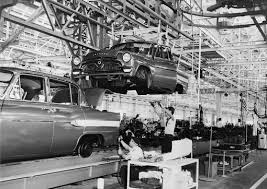
Falsafah Pegangan Toyota
Letakkan kursor di atas kotak untuk membalikkannya.
(Place the cursor on the box to flip it.)

① Kepuasan pelanggan no.1
▸ Merupakan matlamat syarikat selain keuntungan.
Kenapa kepuasan pelanggan no. 1?
● Dengan kepercayaan pelanggan, syarikat akan terus mengukuh dan terus berkembang.
● Kepuasan pelanggan memberi keuntungan kepada syarikat.
● Tanpa pelanggan, sesebuah syarikat tidak akan berjaya.
Bagaimana untuk mencapai kepuasan pelanggan no. 1?
① Produk berkualiti
② Servis berkualiti
③ Produk yang selamat
② Orang adalah sumber paling berharga
▸ Pekerja adalah merupakan aset penting terhadap syarikat.
Kenapa orang adalah sumber paling berharga?
● Pekerja adalah merupakan aset/sumber paling berharga kepada Syarikat.
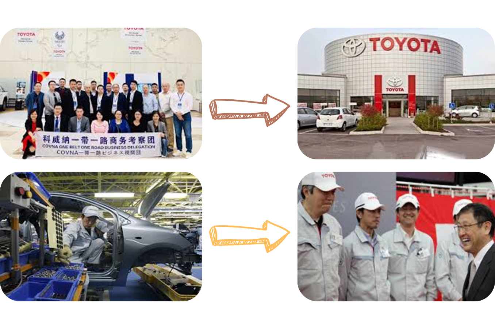
● Latihan sepenuhnya diberikan kepada pekerja.
Contoh:
① Sebelum berada dilapangan kerja sebenar.
② Peningkatan karier.
③ Penambahbaikan berterusan
▸ Kaizen berterusan akan meningkatkan kecekapan operasi.
Kenapa perlu penambahbaikan berterusan?
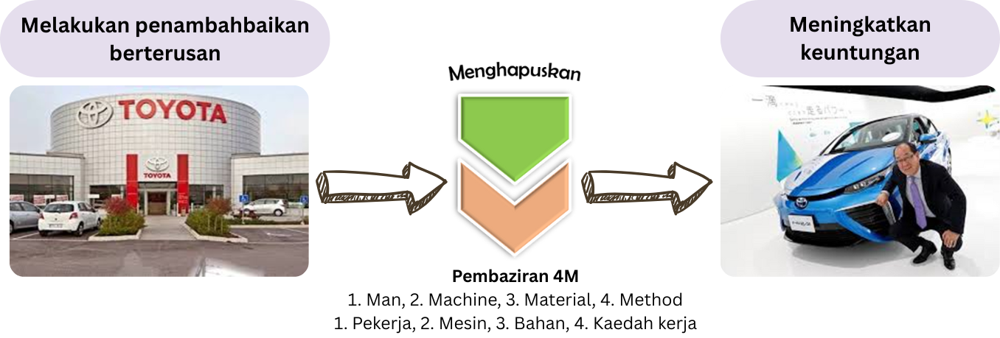
Setiap kepayahan pekerja akan diambil kira untuk penambahbaikan bagi mengurangkan beban/kesusahan terhadap pekerja.

④ Fokus bahagian pembuatan
▸ 4M Operasi akan sentiasa ditambah baik.
Kenapa perlu fokus bahagian pembuatan?
Bahagian pembuatan adalah merupakan bahagian utama penghasilan produk.
Setiap bahagian 4M adalah sangat penting, akan sentiasa ditambahbaik untuk mencapai Kepuasan Pelanggan Sepenuhnya.
Man (Pekerja)
Material (Bahan)
Machine (Mesin)
Method (Kaedah)
Pengenalan Toyota dan Sistem TPS
Konsep & Pemikiran Toyota
Toyota sentiasa mencari keharmonian dengan syarikat-syarikat antarabangsa [Melalui supply kereta Toyota]

Untuk memenuhi misi syarikat.

Cara Toyota
① Menjalani kehidupan yang kaya dengan budaya.
② Menghidupkan tempat tersebut melalui syarikat.
③ Kehidupan yang stabil untuk semua pekerja.
④ Menjalin hubungan baik dengan penduduk sekitar.
Secara Asas
① Pemikiran/Idea asas pengurangan kos dengan menghapuskan pembaziran 'MUDA' secara habis-habisan adalah yang terbaik.
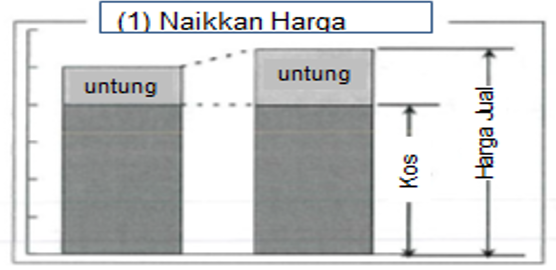Gambar rajah 1
Keuntungan dengan menaikkan harga, hakikat untung tetapi pelanggan berfikir panjang untuk membeli, dan keuntungan jangka masa pendek.
② Konsep meningkatkan harga dan pengurangan kos (2 konsep berbeza dalam meningkatkan keuntungan).
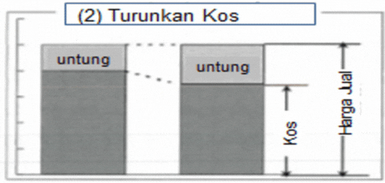Gambar rajah 2
Keuntungan dengan cara menurunkan kos pembuatan, lebih baik dan berkesan untuk jangka masa panjang.
Bagaimana Toyota Berfikir dalam Menjana Keuntungan?
Cara Toyota Berfikir
▶ Kawal keseluruhan kos operasi:
- Man
- Machine
- Material
- Method
▶ 4 sumber penting [4M] yang membantu
kejayaan Toyota.
▶ Keuntungan masih dapat dikekalkan.
▶ Syarikat dapat bertahan lama.
Company A
▶ Tiada kawalan keseluruhan kos operasi:
- Man
- Machine
- Material
- Method
▶ Kos operasi meningkat.
▶ Keuntungan syarikat sikit.
▶ Adakah company akan bertahan?
Company B
▶ Kekalkan kawalan keseluruhan kos operasi:
- Man
- Machine
- Material
- Method
▶ Naikkan harga jualan.
▶ Keuntungan meningkat.
▶ Adakah pelanggan akan membeli produk yang mahal?